Galería
Por qué este equipo
Altura y capacidad
Hasta 4000 kg y 17.40 m de altura, con 13.48 m de alcance horizontal y estabilizadores para trabajar a máxima altura.
Todo terreno
Tracción y dirección en las cuatro ruedas, 380 mm de distancia al suelo y radio de giro exterior de 4.05 m.
Manejo con una palanca
Mando monopalanca y caja de 4 marchas adelante y 4 atrás con convertidor de par. Hasta 28 km/h.
Motor Perkins
Perkins 1104D-44T de 4 cilindros y 4.4 l: 92 hp (70 kW) y 392 Nm de par.
Frenado en ambos ejes
Frenos multidisco en baño de aceite en el eje delantero y en el trasero.
Un equipo, muchos trabajos
Horquillas, cazos, plumines, cazos hormigoneros y mezcladores: carga, movimiento de material, izaje y hormigón.
Datos técnicos
Datos del fabricante para el modelo MXT 1740 P.
| Capacidad de elevación máx. | 4000 kg |
| Altura de elevación máx. | 17.40 m |
| Alcance máx. | 13.48 m |
| Longitud total al tablero de horquillas l11 | 6.20 m |
| Anchura total b1 | 2.38 m |
| Altura total h17 | 2.59 m |
| Distancia entre ejes y | 2.90 m |
| Distancia al suelo m4 | 380 mm |
| Anchura de la cabina b4 | 0.78 m |
| Radio de giro exterior Wa1 | 4.05 m |
| Peso sin carga (con horquillas) | 11 235 kg |
| Horquillas (largo × ancho × sección) | 1200 × 125 × 50 mm |
| Marca | Perkins |
| Modelo | 1104D-44T EPA |
| Norma del motor | Fase IIIA |
| Cilindros / cilindrada | 4 · 4.40 l |
| Potencia | 92 hp / 70 kW |
| Par máximo | 392 Nm |
| Tipo de transmisión | Convertidor de par con caja manual |
| Marchas (adelante / atrás) | 4 / 4 |
| Velocidad máx. de desplazamiento* | 28 km/h |
| Ruedas directrices (del. / tras.) | 2 / 2 |
| Ruedas motrices (del. / tras.) | 2 / 2 |
| Freno de servicio | Multidisco en baño de aceite, ejes delantero y trasero |
| Freno de aparcamiento | Manual |
| Mandos | Monopalanca |
| Subida | 13.60 s |
| Bajada | 9.40 s |
| Salida del telescopio | 25 s |
| Retracción | 14.10 s |
| Cavado | 4.10 s |
| Vertido | 3.20 s |
| Tipo de bomba | De engranajes |
| Caudal / presión | 96.70 l/min · 250 bar |
| Aceite hidráulico | 125 l |
| Depósito de combustible | 80 l |
| Ruido en el puesto (LpA) | 92 dB |
| Ruido en el entorno (LwA) | 110 dB |
* Puede variar según la normativa aplicable.
Dimensiones
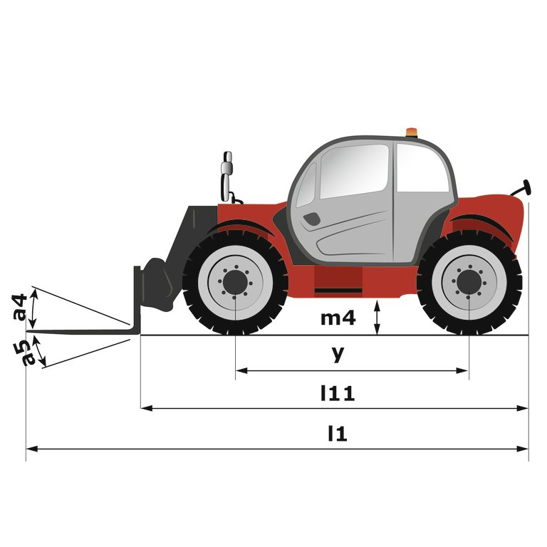
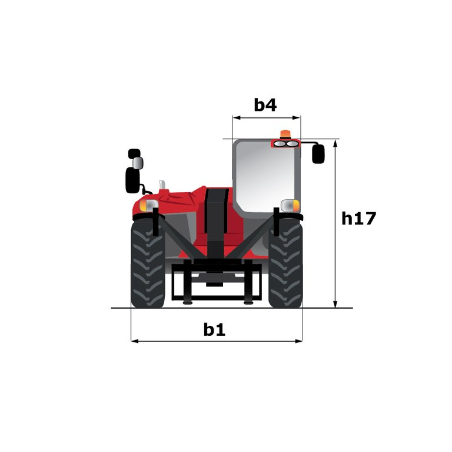
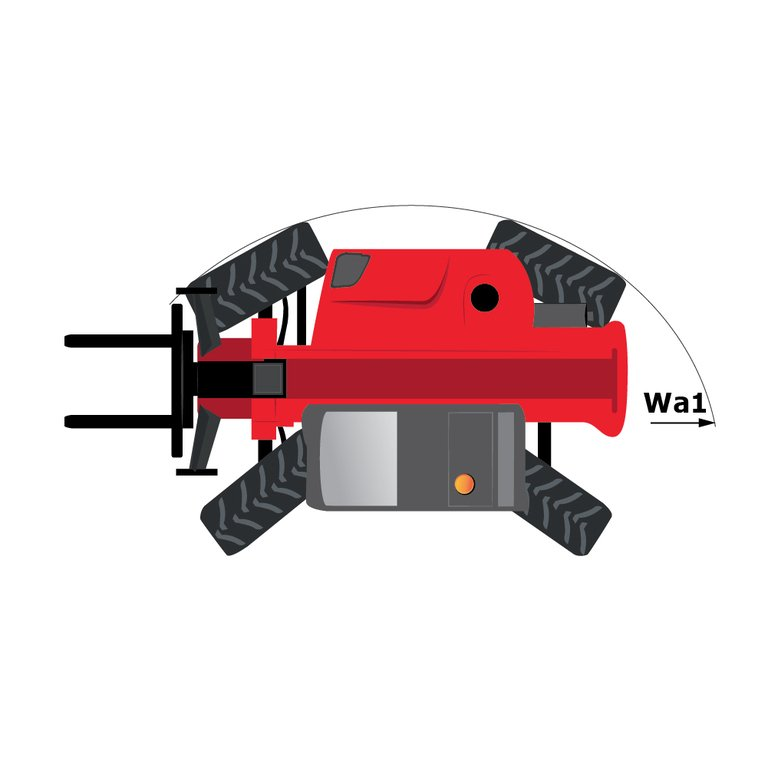
Diagramas de carga
Toque un diagrama para ampliarlo.
Accesorios compatibles
Consulte disponibilidad y precio con su asesor.
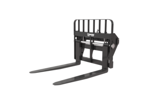
TFF 45 DL 1040
- Capacidad
- 4500 kg
- Anchura
- 1040 mm
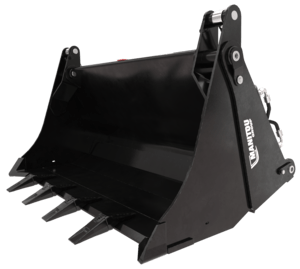
Cazo 4 en 1 · CB4x1 900L
- Capacidad
- 1888 kg
- Volumen
- 899 l
- Anchura
- 2450 mm
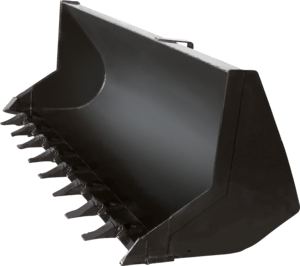
Cazo de construcción · CBC 900L
- Capacidad
- 1875 kg
- Volumen
- 893 l
- Anchura
- 2450 mm
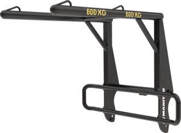
Manejador de sacas · HBB 1500
- Capacidad
- 2400 kg
- Peso
- 186 kg
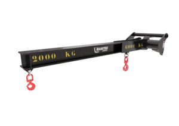
Plumín con 2 ganchos · P 4000
- Capacidad
- 4000 / 1200 kg
- Alcance
- 708 / 2708 mm
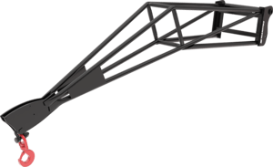
Plumín largo · P 600
- Capacidad
- 600 kg
- Alcance
- 3746 mm
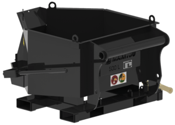
Cazo hormigonera · BB 500
- Capacidad
- 1200 kg
- Volumen
- 500 l
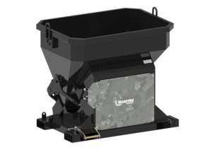
Cazo mezclador · GL 400 / GL 600 H
- Capacidad
- 960 / 1440 kg
- Volumen
- 400 / 600 l
¿Le interesa el MXT 1740 P?
Su asesor comercial de Tecnogrúas le confirma disponibilidad, plazo de entrega, accesorios y condiciones de la cotización.